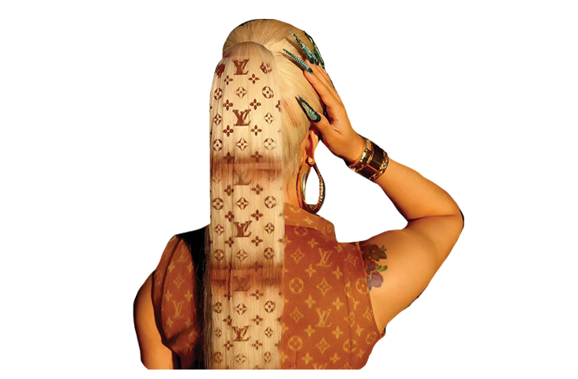
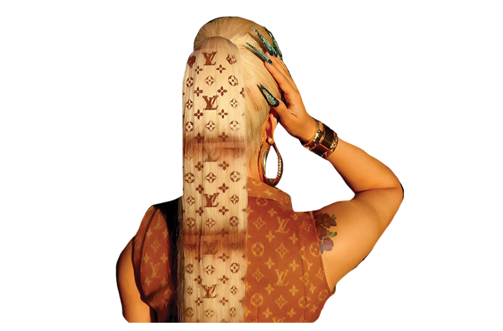

LOGO
TEE
The logo can also represent elite social groups with cult-like followings. Clothes are a material thing, yet something as simple as a white t-shirt can assert oneself into a highly specific and exclusive social group, as long as it has the right logo. Clothes are a material thing, yet we have allowed them to determine social class and groups more so than any other physical part of our appearance. Eric Ing describes this modern phenomenon as “Fashionable clothes and accessories provide meaningful examples of the current changes, as if they were metaphors of our identity choices. In modern class societies, clothes were ‘closed texts with fixed meanings’, and in fragmented postmodern societies, clothes are ‘open texts,’ that represent different social groups in different ways.”
Supreme, for example, is a “cult skate” brand started by James Jebbia in 1994. What started as a small SoHo skate shop on Lafayette Street, somehow turned into one of the most well known “hypebeast” fashion brands. A “hypebeast” is a newer term coined by young people to describe someone who devotes themselves to buying pieces from mainly luxury streetwear brands in order to show off their status or to gain popularity. Supreme knows how to generate “hype” around their brand. They are known to only release new clothing lines twice a year, a highly anticipated event known as a “drop”. When new clothing drops, it sells out instantly, and it has become a popular money-making tactic for fans to buy out items and resell them for steep values. From an interview with Vogue, founder James Jebbia said, “We can have a leather jacket for $1,500, and if it’s a good value, young people will understand that, but we also want to have the feeling that this won’t be here in a month. When I grew up, I think everybody felt that way. It’s like, if I love this, it may not be here, so I should buy it.” Since Supreme clothing is often difficult to acquire, and with the high price points, it has become a symbol of elite or exclusive status.
Just north of the counterfeit hub on Canal Street is the Supreme store on Bowery. The store always has a long line out front with a security guard at the door, letting groups in one by one, like some sort of bouncer to an elite club. When asking some line-waiters about what they planned on purchasing, a young boy, about 14, with his parents said, “Probably just a hat or a t-shirt since that's all I can afford, but it’s my first Supreme piece so I’m really excited.” One of Supreme’s most popular pieces is a simple white t-shirt with their red “box logo” on the front. Something as simple as a white t-shirt may not seem very exciting, but someone who wants to be a part of the Supreme “tribe” can feel like they own a piece of the brand through something like a plain t-shirt. However, to others, it may seem silly to spend hundreds of dollars on a white t-shirt. A woman passing by the Supreme store said, “I just think it's silly. Supreme has some of the best marketing tricks out there, and they all fell for it. Like, congrats you got tricked into being a walking advertisement and spending $200 on a t-shirt!”.
Another pair of friends in line said “We’re going to buy a few things and try and resell them on eBay. I’ve done it a couple times before and you can actually make money doing it. People will spend a fortune just to wear Supreme, it's crazy.” We asked the same people what it is about the brand Supreme that they like so much. The boy responded with “A lot of my friends wear it and I just think it's really cool. I also like a lot of the pro skaters that wear it.”
Similar to the Canal Street bootleg buyers, these Supreme fans are purchasing the pieces because they see other people wearing it, either friends or celebrities, and therefore they want to buy into it too. Whether it be a display of status, due to the high price points, or to assert oneself into the most elite skater group, Supreme knows how to generate excitement and exclusivity around their brand.


 
